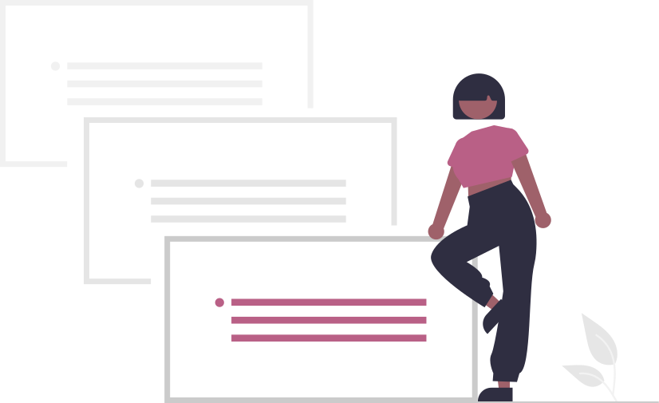
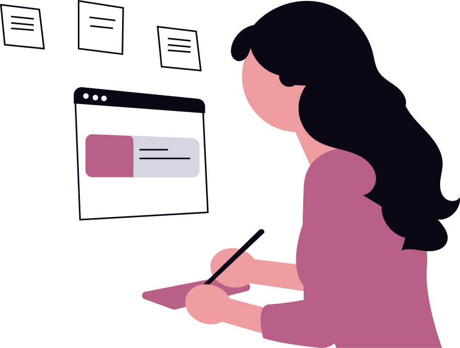

¿QUIÉN SOY?
Me considero una persona proactiva, responsable y creativa, con interés en el desarrollo web...
Ver más
EDUCACIÓN
Soy Licenciada en Ingeniería de Sistemas Informáticos por la Universidad del Valle (2019–2022)...
Ver más

CURSOS Y CERTIFICACIONES
He complementado mi formación académica con diversos cursos y certificaciones en tecnología y
metodologías ágiles...
Ver más

HABILIDADES
Cuento con experiencia en desarrollo web utilizando tecnologías como HTML, CSS, Bootstrap,
JavaScript, PHP, C# y el framework Laravel...
Ver más